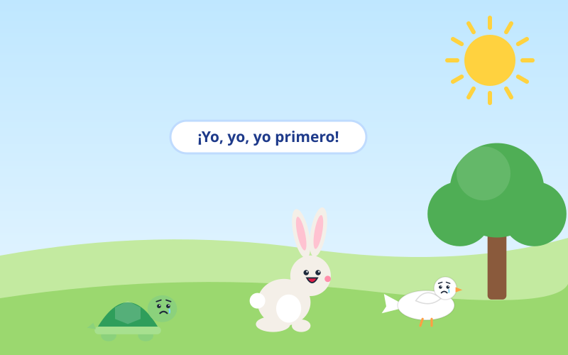
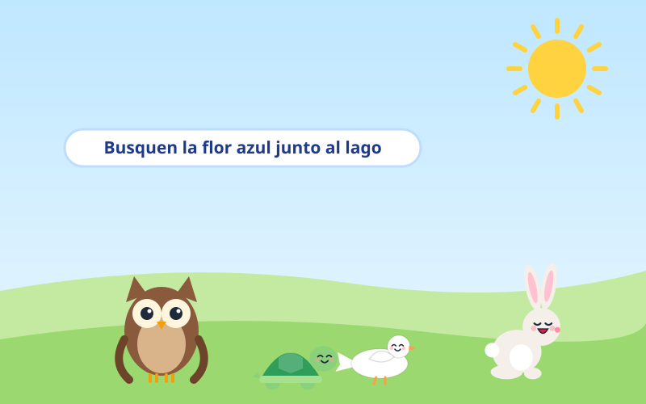
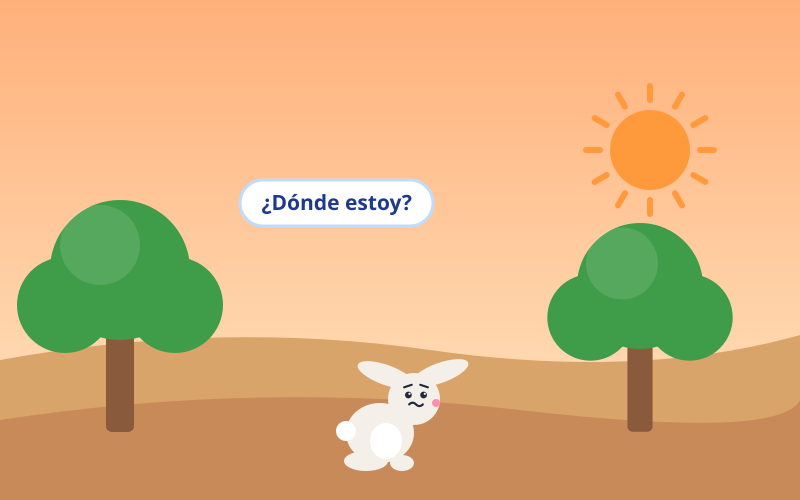
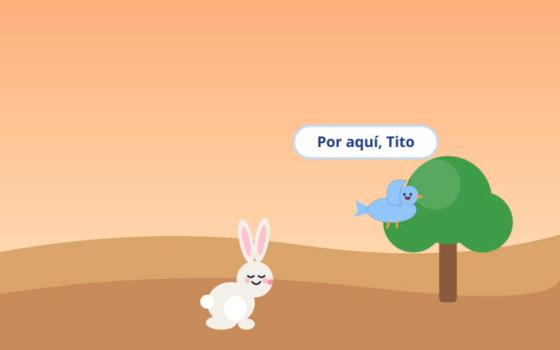
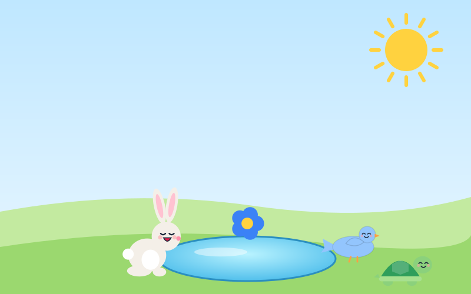
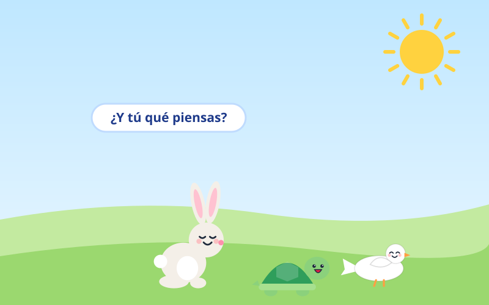

Tito era un conejito muy alegre, pero tenía un problema: hablaba todo el tiempo y no dejaba hablar a los demás. Cuando sus amigos contaban algo, él los interrumpía.
—¡Yo, yo, yo primero! —decía siempre Tito.

Un día, la maestra Búho explicó un juego: había que buscar un tesoro. Todos prestaron atención, menos Tito, que estaba jugando con una hoja.
—Busquen la flor azul junto al lago —explicó la maestra.

Tito corrió hacia la colina, ¡pero el lago estaba al otro lado! Como no había escuchado, se perdió entre los árboles.
—¿Dónde estoy? No escuché por dónde había que ir… —dijo asustado.

Tito se quedó quieto y, por primera vez, guardó silencio. Entonces escuchó una vocecita: era su amigo Pío, el pajarito, que lo estaba buscando.
—Por aquí, Tito. ¡Sígueme! —cantó Pío.

Siguiendo la voz de Pío, llegaron al lago. ¡Allí estaba la flor azul! Tito y sus amigos la encontraron juntos.
—¡Gracias, Pío! Escuchar me ayudó a encontrar el camino.

Desde ese día, Tito paraba sus orejas y escuchaba a sus amigos. Descubrió que ellos contaban historias muy divertidas.
—¿Y tú qué piensas? —le preguntaba ahora Tito a cada amigo.
Escuchar es una forma de respetar a los demás. Cuando dejamos hablar y prestamos atención, aprendemos cosas nuevas y hacemos sentir importantes a nuestros amigos.